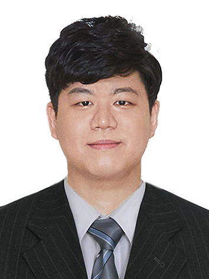

|
 |
Gyuyeong Kim
Research Professor
Future Network Center
School of Cybersecurity
Korea University
Email: gykim08 at korea.ac.kr
GitHub,
LinkedIn,
Google scholar,
CV
|
I am a research professor at Korea University, and a member of NetLab.
I completed my Ph.D. at Korea University in February 2020 under Prof. Wonjun Lee, focusing on buffer sharing mechanisms to achieve high performance and performance isolation in data centers. I graduated from Korea University with B.S degrees in computer science and cognitive science. I have broad research interests in networked systems. My current research work is to leverage emerging programmable networking devices for next-generation cloud/big data/AI systems.
Recent News
- Jan. 2021 LossPass accepted to IEEE Trans. on Cloud Computing
- Mar. 2020 DynaQ accepted to IEEE ICDCS 2020
- Feb. 2020 I am awarded a NRF research project grant (신진연구지원사업)
Research Interests
- Networked systems
- Data center networking
- Programmable hardware
- Networking support for cloud, big data, and AI systems
Research Projects
- In-Network Resource Augmentation utilizing Reconfigurable Network Devices, Principal investigator, Young Research Program (신진연구지원사업), NRF, 2020 - 2023
Teaching
- IP01024: Data Communication and Network - [Spring 2021] @ Seoul Women's University
- IMS301: Computer Networks - [Spring 2020, Fall 2019] @ Korea University
Professional Activities
- Reviewer, IEEE Transactions on Cloud Computing (TCC), 2019 - 2020
- Reviewer, IEEE Networking Letters, 2019
- External Reviewer, IEEE International Conference on Computer Communications (INFOCOM), 2020
- External Reviewer, IEEE International Conference on Distributed Computing Systems (ICDCS), 2019
Invited Talks
- P4 Switch Architecture, SDN/NFV Forum P4 WG 2020 1st Meetup, Seoul, South Korea, December 14, 2020.
- Tutorial: P4 SFC, SDN/NFV Forum P4 WG 2019 1st Meetup, Seoul, South Korea, April 19, 2019.
- Service Function Chaining in P4-enabled Programmable Switches, SDN/NFV Forum P4 WG 2018 2nd Meetup, Seoul, South Korea, October 12, 2018.
- Controller-independent Loss-aware Low Latency State Migration in Network Functions Virtualization, ONOS-P4 Brigade Work Days 2017, Seoul, South Korea, September 19, 2017.
Conference Publications
- Gyuyeong Kim and Wonjun Lee, "Protocol-Independent Service Queue Isolation for Multi-Queue Data Centers," in Proc. of the 40th IEEE International Conference on Distributed Computing Systems (ICDCS 2020), Singapore, December 2020. (105/584, Acceptance rate: 17.98%, NRF Top-tier Conference Grade 3) [pdf]
- Gyuyeong Kim and Wonjun Lee, "Service Function Chaining on Programmable Data Plane," in Proc. of the 5th International Conference On Consumer Electronics Asia, Busan, South Korea, November 2020. [pdf]
- Gyuyeong Kim and Wonjun Lee, "Stable Matching with Ties for Cloud-assisted Smart TV Services," in Proc. of the 14th IEEE International Conference on Consumer Electronics, Las Vegas, NV, January 2014. [pdf]
- Gyuyeong Kim and Wonjun Lee, "Cannot Take My Allocation: Enforcing Fairness by Considering Demand and Payment in Clouds," in Proc. of the 4th International Conference on Network of the Future, Pohang, South Korea, October 2013. [pdf]
- Gyuyeong Kim, Hoorin Park, Jieun Yu, and Wonjun Lee, "Virtual Machines Placement for Network Isolation in Clouds," in Proc. of 2012 Research in Applied Computation Symposium, San Antonio, TX, October 2012. [pdf]
Journal Publications
- Gyuyeong Kim and Wonjun Lee, "LossPass: Absorbing Microbursts by Packet Eviction for Data Center Networks," to appear in IEEE Transactions on Cloud Computing (TCC), Vol. xx, No. xx, pp. xxxx-xxxx, January 2021. (JCR2019 Top 10.19% in CS, Theory & Methods Category) [pdf]
- Gyuyeong Kim and Wonjun Lee, "Enabling Service Queue Isolation in Multi-Tenant Data Centers," IEEE Communications Letters (CL), Vol. 23, No. 11, pp. 1949-1952, November 2019. [pdf]
- Gyuyeong Kim and Wonjun Lee, "Absorbing Microbursts without Headroom for Data Center Networks," IEEE Communications Letters (CL), Vol. 23, No. 5, pp. 806-809, May 2019. [pdf]
- Gyuyeong Kim and Wonjun Lee, "Tardy Flow Scheduling in Data Center Networks," IEICE Transactions on Information and Systems, Vol. E99-D, No. 9, pp. 2400-2403, September 2016. [pdf]
Patents
- Wonjun Lee and Gyuyeong Kim, "Method to Enforce Network Policy with Commodity Multiqueue, Recording Medium and Device for Performing the Method," Korean Patent Registration No. 10-2179769, November 11, 2020.
- Wonjun Lee and Gyuyeong Kim, "Method for Data Processing," Korean Patent Registration No. 10-2064679, January 3, 2020.
- Wonjun Lee and Gyuyeong Kim, "Method and Device for Scheduling Flow of Packet for Reducing Delay Time Due To Retransmit of Packet," Korean Patent Registration No. 10-1841143, March 16, 2018.
Work Experience
- President at KLUE (Korea University Lecture Evaluation), South Korea, January 2011 - February 2015.
- Co-Founder and Junior Developer at KLUE, South Korea, March 2010 - June 2010.
- ‘좋은 강의’와 ‘대학 강의 평가’, ppss(ㅍㅍㅅㅅ), December 10, 2015.
- 강의의 모든 것, "명강의' '이화노트' 'KLUE',The Myungji Press (명대신문), April 20, 2013.
- Students without Rights to Know, The Granite Tower, April 2, 2013.
- 학생강의평가 사이트 "유용한데~", Daily UNN(한국대학신문), January 7, 2013.
- 고려대, 총학이 강의평가한다, KTV(한국정책방송), January 12, 2012.
Awards and Honors
- IEEE Seoul Section International Student Paper Contest Bronze Paper Award, 2014.
- Global Ph.D. Fellowship (GPF), NRF, South Korea, 2012-2014.
- ACM-ICPC Seoul Regional Contest 10th Place, 2009.
- National Collegiate Programming Contest Silver Prize, South Korea, 2009.
- Oracle JavaFX Software Contest 3rd Prize, 2009.
- ACM-ICPC Seoul Regional Contest Honorable Mentions, 2008.
Last Update: February 26, 2021